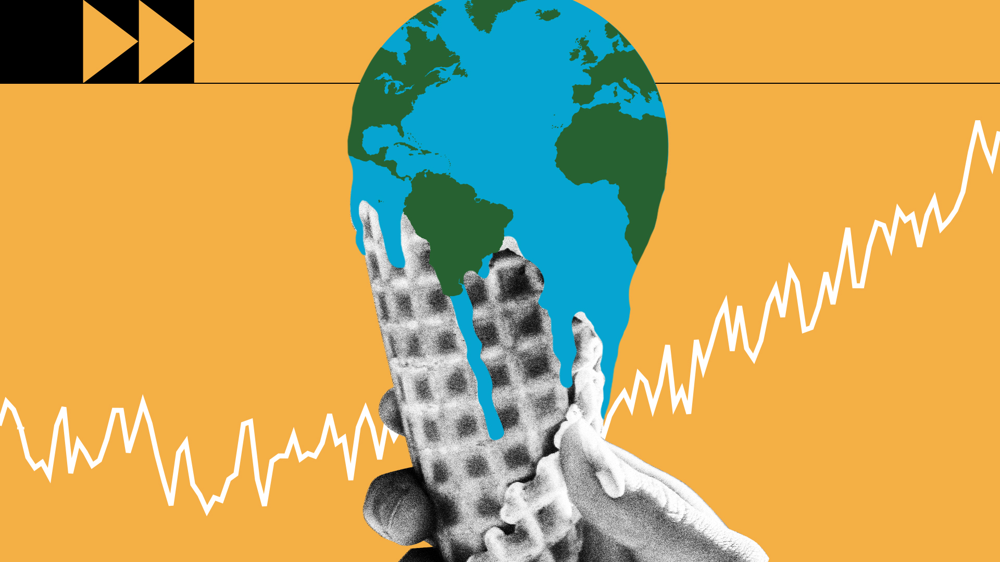

Muchas soluciones al cambio climático pueden aportar beneficios económicos al tiempo que mejoran nuestras vidas y protegen el medio ambiente. También contamos con marcos y acuerdos globales para guiar el progreso, como los Objetivos de Desarrollo Sostenible, la Convención Marco de las Naciones Unidas sobre el Cambio Climático y el Acuerdo de París. Hay tres amplias categorías de acción: reducir las emisiones, adaptarse a los impactos climáticos y financiar los ajustes necesarios.
El cambio de los sistemas energéticos de los combustibles fósiles a las energías renovables, como la solar o la eólica, reducirá las emisiones que provocan el cambio climático. Pero tenemos que empezar ya mismo. Aunque una coalición cada vez más numerosa de países se compromete a alcanzar las emisiones cero para 2050, alrededor de la mitad de los recortes en las emisiones deben producirse antes de 2030 para mantener el calentamiento por debajo de 1,5 °C. La producción de combustibles fósiles debe disminuir aproximadamente un 6 % anual entre 2020 y 2030.
La adaptación a las consecuencias del clima protege a las personas, los hogares, las empresas, los medios de subsistencia, las infraestructuras y los ecosistemas naturales. Abarca los impactos actuales y los probables en el futuro. La adaptación será necesaria en todas partes, pero debe darse prioridad ahora a las personas más vulnerables y con menos recursos para hacer frente a los riesgos climáticos. La tasa de rendimiento puede ser alta. Los sistemas de alerta temprana de catástrofes, por ejemplo, salvan vidas y bienes materiales, y pueden aportar beneficios hasta 10 veces superiores al coste inicial.